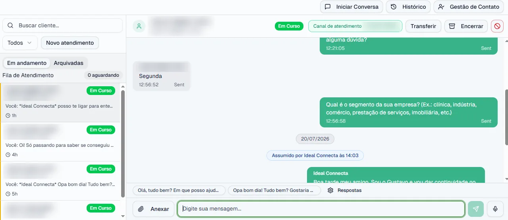
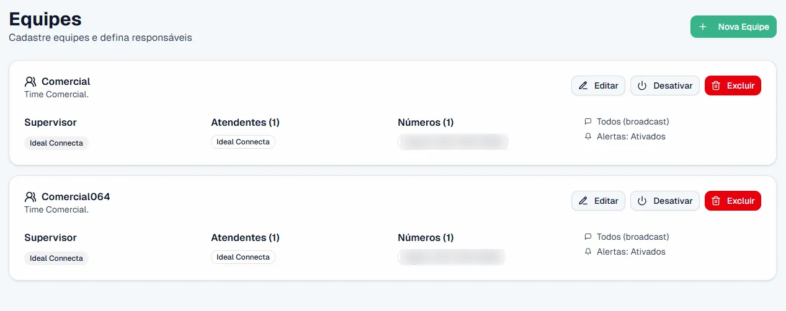
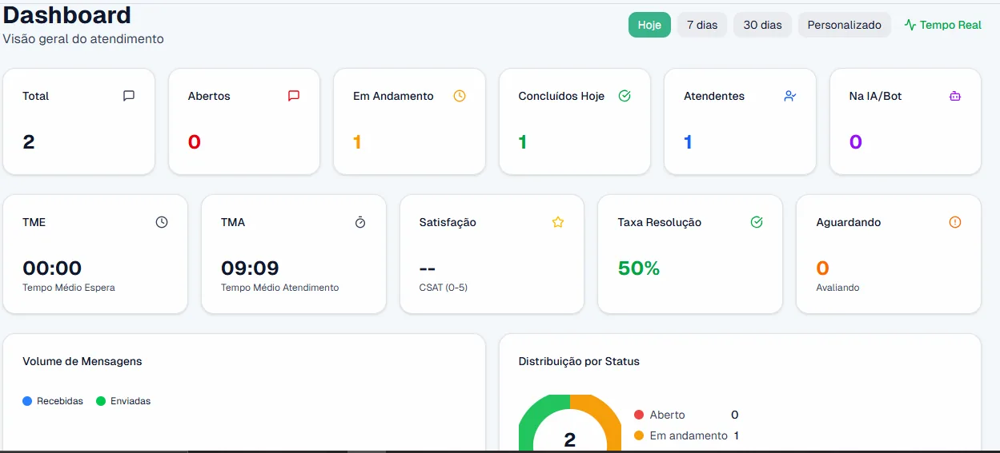
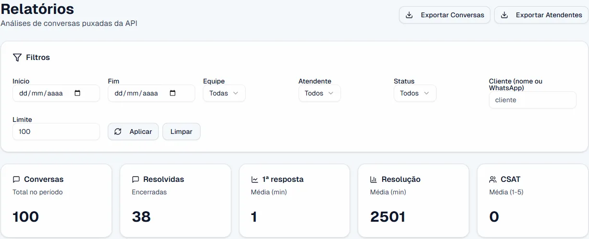
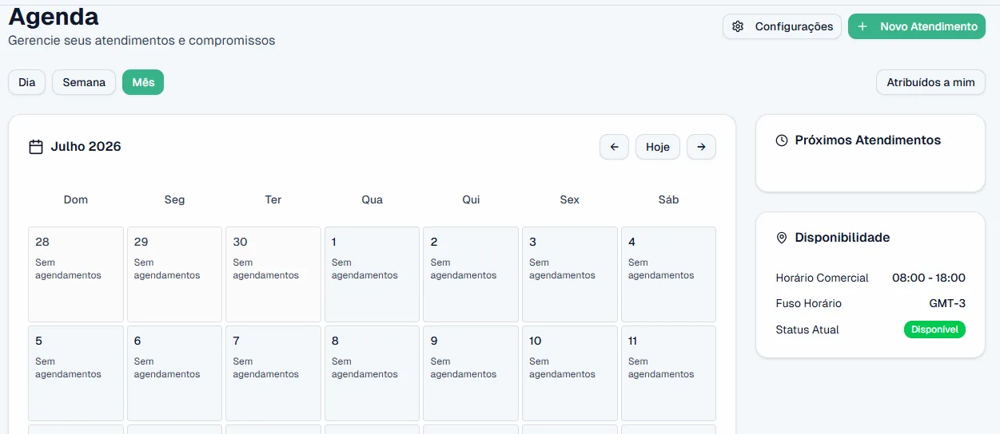

"O número da empresa foi banido do nada."
Ferramenta não oficial e disparo pelo app comum estão entre as causas mais citadas de banimento. Com o número, vai o contato dos clientes.
Plataforma de multiatendimento na API Oficial da Meta. Seu time atende junto, num painel só, e o gestor acompanha tudo em tempo real — sem conversa perdida e sem depender de ferramenta que derruba o número.
Falar com a gente no WhatsApp
"O número da empresa foi banido do nada."
Ferramenta não oficial e disparo pelo app comum estão entre as causas mais citadas de banimento. Com o número, vai o contato dos clientes.
"Cada atendente atende no próprio celular."
Conversas espalhadas, sem ponto único de controle. Quando alguém sai da empresa, o histórico do cliente sai junto.
"O cliente reclamou que ninguém respondeu."
Sem fila e sem regra de distribuição, a mensagem se perde no meio das outras e o cliente compra de quem respondeu primeiro.
Demora para responder é a queixa nº 1 no atendimento online: 58,6% (pesquisa Locaweb, 2026)."Não sei o que meu time está respondendo."
Quem atendeu, quanto tempo levou, o que ficou parado. Sem isso não dá pra cobrar, orientar nem melhorar.
Tudo isso tem a mesma raiz: WhatsApp usado no improviso.
Toque nas abas e veja as telas reais da plataforma.
Fila, conversa ativa e histórico no mesmo lugar, para qualquer atendente autorizado.
A gestão define supervisor, atendentes e números de cada equipe em poucos cliques.

Volume e qualidade do atendimento num painel, sem cruzar planilha.

Recursos opcionais, ligados quando fizer sentido para a sua operação.
Dados prontos para reunião de gestão e metas.

Cada atendimento agendado fica visível no calendário da equipe.

A Meta credencia empresas para conectar outras empresas à API oficial do WhatsApp. A Ideal Conecta é uma delas.
Você não precisa escolher. A API oficial e o WhatsApp Business ficam na mesma plataforma, atendidos pelo mesmo time.
"Atendimento de extrema qualidade, plataforma intuitiva e de fácil gestão! Ajudando tanto o gestor quanto os atendentes."
"Ótima plataforma, super fácil de usar!! Pessoal muito gentil, oferecem um suporte sem igual, indico!"
"Tive uma experiência extremamente positiva com a Ideal Conecta, marcada pela excelência no atendimento e qualidade nos serviços prestados."
Quantos números, quem atende o quê, o que não pode parar.
API oficial, equipes, regras de distribuição e WhatsApp Business, se quiser manter.
Todo mundo aprende antes da virada, e o analista técnico fica no grupo com você.
Sem taxa de implantação. Quem escolhe a data da virada é você.
Chame no WhatsApp, conte como é o seu atendimento hoje e veja a plataforma funcionando.
Falar com a gente no WhatsAppSem taxa de implantação. Sem formulário.